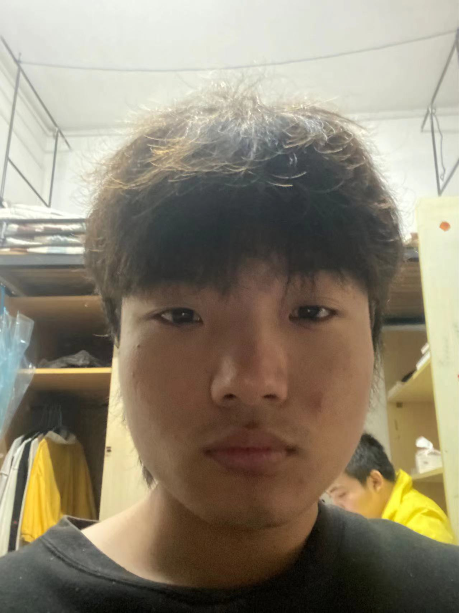

Watermelon
Contact information
Rusume summary
|
Education
|
Skills
|

The Resume of Watermelon
About my hobbies and work experience
Mobile phone:******** E-mail:**********@qq.com Address:No.9Xuefu Road,Ningbo,Zhejiang province China,315100.
An independent and positive college student who is learning computer application technology.eg(PS、Pr、Ae）.Astrong link between self-study ability and part-time experience.Relevant work experience:Waiter KFC 06/2021 Duties:Ssrve and close the table.
Coder dormitory 02/2021-03/2022 Duties:Print verification code. Volunteer Ningbo library 02/2021-03/2022 Duties:Organize books.
Advanced Dipolima in IT.Ningbo City college of vocational technology 10/2020-06/2023 Relevant courses taken:English learning and computer technology.Introduction: My favorite three courses are English listening, writing and oral expression in school. At the same time, both Chinese and Australian courses are about computer app technology, similar to pr, ps, ae, etc., and they also learn a lot of psychological and political content.
Hard skill:useage of Pr and PS. Soft skills:Strong selt-control ability.My advantage is that I think I have strong self-learning and self-management ability, and can finish the task in time. My disadvantage is that I always force myself to finish the task and forget the concept of time.Obtained CET-4 certificate in 06/2021.For change:In the future, I will further develop my advantages. At the same time, I will set an alarm clock for myself to remind me of the present time or ask my classmates to remind me all the time to get rid of this bad habit and prevent the work efficiency from decreasing.